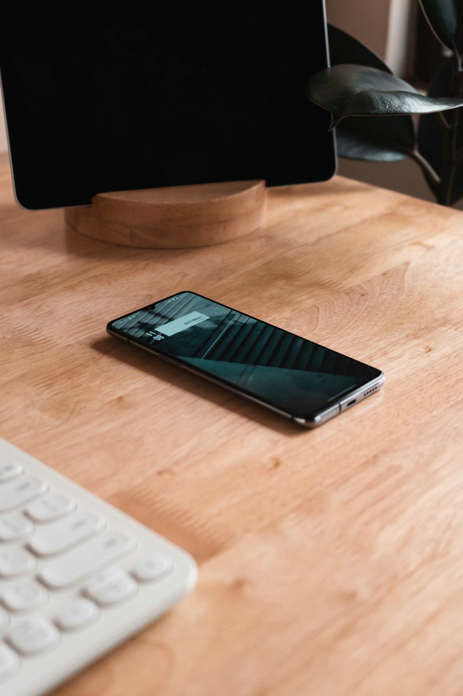

BIFROST.Automação
Orçamento sem custo
Mensagem que sai sozinha, todo dia
Lembrete, confirmação e retorno ao cliente no automático. Conte qual tarefa toma mais tempo aí.
Fale com a gente pelo direct →

Lembrete, confirmação e retorno ao cliente no automático. Conte qual tarefa toma mais tempo aí.